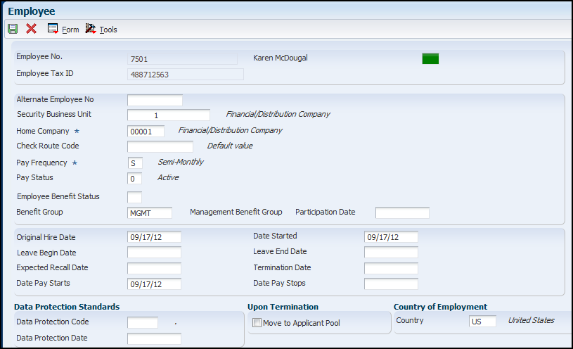
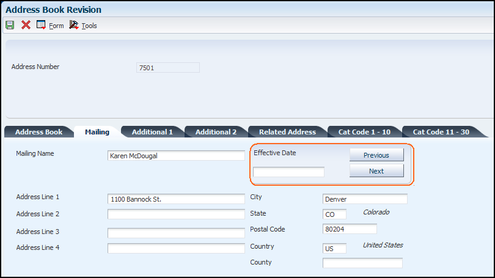
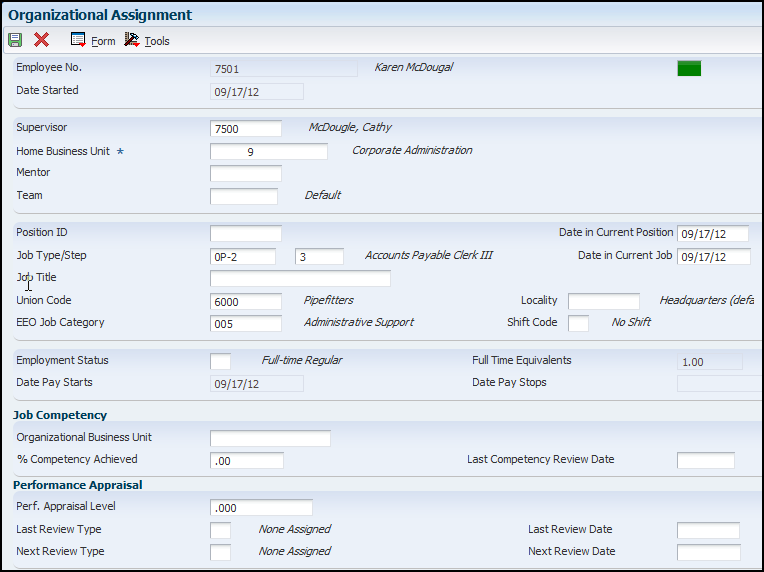
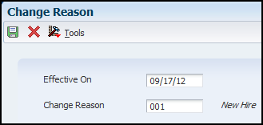
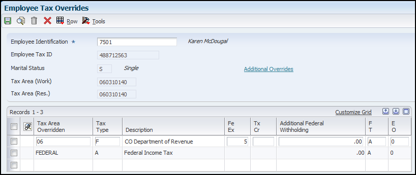
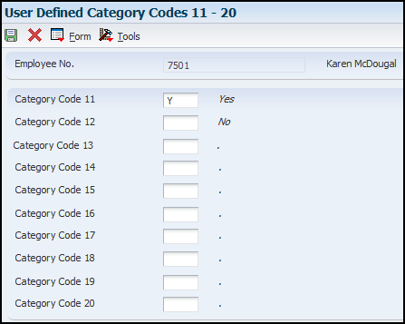
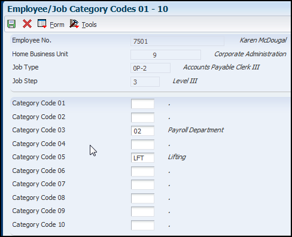

This document provides an overview of adding a US Employee using the Employee Information application (P0801). This document provides information on the series of forms that automatically display when adding a new employee record and addresses some specific scenarios that may be needed for some employees.
Scope
This document is intended for EnterpriseOne users who are setting up the Human Resources module for use within their organization.
Details
Overview of Employee Record Entry
Methods of Employee Record Entry
When you hire an employee, you must add an employee record that contains personal, company, job, and pay information for the employee. The information in the employee record can be used to analyze and report on your employees and to meet government reporting requirements. You can add employee records to the database using either of two methods:
Adding employee records one at a time
Adding multiple employee records
This table describes the similarities and differences between the methods:
Method
Comparison
Adding employee records one at a time
This method displays a series of forms that you need to complete to hire an employee. This method is preferable if you hire individuals with very diverse employee information so that hiring in groups is not applicable. You can use this method to add new employee and terminated employee (rehire) records to table Employee Master Information (F060116).
Adding multiple employee records
This method uses the Employee Quick Hire program (P060116Q). It saves data entry time because you add records in groups based on similar job information. You can use this method to add new employee, terminated employee (rehire), and applicant records to the F060116 table
Note: This document only covers the steps for adding employees one at a time.
Understanding Employee Information
Basic employee information includes general identification information about the employee. You need this information to include the employee in payroll processing. When you create a record for a new employee, the system stores information for the employee in the following tables:
Employee Master Information (F060116)
Employee Master Additional Information File (F060120)
Employee Master - International Data (F060117)
Employee Master - International Data Tag (F060117A)
Employee Jobs (F060118)
Address Book Master (F0101)
Note: When you add a new employee record to the database, you complete a series of forms. As you complete each form, the next form appears. You can use the Back button to return to a previous form, where you can review or change information before saving the employee's record. The system saves the new record only after you complete the entire sequence of forms.
After you create a record of employee information, you can:
Make changes, corrections, or updates.
Review the information as necessary.
Process a timecard for the employee.
Enroll the employee in benefits.
Process the employee in a payroll.
Terminate the employee.
Rehire the employee.
Record Reservation
Before adding employees it is important to understand record reservation. This is an optional functionality in JD Edwards EnterpriseOne Human Resources that prevents loss of data when two users simultaneously attempt to update the same record in the database. When you activate record reservation for a particular program, only one user at a time can access a record in the table that the program uses for data storage. For example, assume that record reservation has been activated for the employee master group of programs (P0801). User 1 is updating salary information for an employee in the Employee Basic Compensation program (P0801CMP). At the same time, User 2 opens the Basic Compensation program and attempts to access the same employee record. User 2 receives an error message indicating that the employee record is reserved. The system prevents User 2 from gaining access to the record. The record remains reserved until User 1 saves any changes and closes the program.
Two significant limitations to record reservation exist. First, it can only be used for the following programs:
Employee/Personal (P0801EMP)
Employee Organizational Assignments (P0801ORG)
Employee Basic Compensation (P0801CMP)
Employee Eligibility, NDT, and Participation (P0801ELI)
Employee Payroll (P0801PRL)
Employee National and Fiscal Data - Australia (P75A0801)
Employee National and Fiscal Data - Canada (P0801CA)
National/Fiscal Data - Regional Information (P76M0801)
Employee National and Fiscal Data - USA (P0801US)
And second, if you activate record reservation for any of the programs in the employee master group, it is activated for all the programs.
Employee Information (P0801)
Setting Processing Options for Employee Information (P0801)
Before adding an employee you should review the processing options for each program in this series of tasks. They define how much information you must enter. For example, processing options for organizational assignments define whether the Job Information table (F08001) supplies default job information when you add or change employee information. In the JD Edwards EnterpriseOne Address Book system, review the processing options for the Address Book Revisions program (P01012) to ensure that the tax ID is set to appear.Setting Processing Options for Employee Master (P0801)
Processing options enable you to specify the default processing for programs and reports.
Defaults Tab - Use these processing options to define the defaults for the Security Business Unit, Tax Area (Residence) and Tax Area (Work) fields.
1. Security Business Unit - Specify whether the system updates the Address Book record for the employee with the security business unit that you enter on the Employee form (P0801EMP). Values are:
1: Updates the Address Book.
0: Does not update the Address Book.
2. Tax Area - Specify whether the Tax Area (Residence) and Tax Area (Work) fields are required fields when you add or change an employee record. The JD Edwards EnterpriseOne Payroll system uses the tax area fields to calculate payroll taxes for employees. Values are:
1: Not required. select this option only if you are not using the JD Edwards EnterpriseOne Payroll system to process payroll for employees.
0: Required. If you are using the JD Edwards EnterpriseOne Payroll system, select this option.
Versions Tab - Use these processing options to define the versions that the system uses for Organizational Assignment, Basic Compensation, and Address Book Revision forms.
Organizational Assignment Version - Specify the version of the program that you want to use when you add or change information on the Organizational Assignment form (P0801ORG). If you leave this processing option blank, the system enters the default version, ZJDE0001. When you define a version for Organizational Assignment, you can set processing options that control the type of default job information that you want the system to use on the Organizational Assignment form (P0801ORG) when you add or change an employee record.
Basic Compensation Version - Specify the version of the program that you want to use when you add or change information on the Basic Compensation form (P0801CMP). If you leave this processing option blank, the system enters the default version, ZJDE0001. When you define a version for Basic Compensation, you can set processing options that control information that the system needs when you have activated the salary change workflow process.
Address Book Version - Specify the version of the Address Book program (P01012) that the system uses when you add or change information on the Address Book Revision form. If you leave this processing option blank, the system uses the default version, ZJDE0002. When you define a version of the Address Book program, you can set processing options that control how the application functions. For example, you can specify whether the form displays the Tax ID field.
Termination Tab - Use these processing options to define default codes that are supplied to various records when an employee is terminated.
Candidate Req Status (candidate requisition status) - Specify a code from UDC 08/CN to indicate the candidate requisition status that you use to indicate that an employee record is no longer attached to a requisition. This candidate requisition status must have DET entered in the special handling code field. When you terminate an employee, the system uses the code that you define in this processing option to update the candidate requisition status for all of the requisitions that the employee filled.
Requisition Status - Use this processing option only if you have set up the System Options program (P05001S) to automatically create a new requisition when an employee is terminated. Specify a code from UDC 08/RS to indicate the requisition status that you want to assign to the new requisition. If you leave this processing option blank, the system does not create a new requisition when you terminate an employee.
Organizational Structure Type - Specify a code from UDC 01/TS to indicate the organizational structure type that you use to indicate the parent/child relationship between terminated employees and their supervisors. The system uses the termination date to update the parent/child relationship. If you leave this processing option blank, the system does not update the parent/child relationship between the terminated employee and the supervisor.
Applicant Status - Specify a code from UDC 08/AS to indicate the applicant status that you want to assign to terminated employees who will be returned to the applicant pool for future hiring considerations. If you leave this processing option blank, the system does not assign an applicant status to the terminated employee.
Entering Employee Information - Employee (P0801EMP)
In the Employee Information form the following fields can be completed:

Employee No. - Enter an employee number, tax ID, or alternate number, depending on the employee number display mode that is set up in the Company Options program (P05001C) for company 00000.
Alternate Employee No - Enter an alternate employee number, typically the number from the employee tracking system that your organization used prior to converting to the JD Edwards EnterpriseOne system. To search using this number, preface the number with a slash (/).
Security Business Unit - Enter a business unit number that secures the employee's record from unauthorized access. Any user not authorized to access this business unit cannot access this employee's record.
Home Company - Enter the company number where the employee records generally reside.
Check Route Code - Enter a code from UDC 07/CR that specifies the check routing or mail-stop code. Use this code to sequence the printing of payroll checks to facilitate their handling and delivery.
Pay Frequency - Enter a code from UDC 07/PF that indicates how often an employee is paid. Values are:
B: Biweekly
W: Weekly
S: Semimonthly
M: Monthly
A: Annually
C: European Annualized
The system uses the value in the Description-2 field on user-defined codes to indicate the number of pay periods per year and is used to calculate the amount per pay period for a salaried employee.
Pay Status - Enter the code used to indicate whether an employee's pay status is active or inactive. Codes for active pay status employees are numeric, and codes for inactive pay status employees are alphabetic. The system omits all employees with alphabetic pay status codes from the payroll run.
Employee Benefit Status - Enter a code from UDC 06/EA that specifies an employee status, such as new hire or rehire. The system uses this value as it searches and tests for benefits eligibility. An asterisk (*) indicates that the guidelines refer to all employee statuses that are not otherwise specified. Do not change the codes that are hard-coded, such as A (Active) and X (Terminated).These are required codes in the system.
Benefit Group - Enter the benefit group to which the employee is assigned. Benefit groups facilitate employee enrollment by categorizing benefit plans and allowing enrollment rules for those categories. For example, assigning an employee to an executive (EXEC) benefit group automatically links the employee to the benefits available to executives in your organization.
Participation Date – Enter the date the employee began participating in the company deferred income or stock option plan. This date must be later than the date in the Date Started field.
Original Hire Date - Enter the date on which the employee was originally hired by the company. If the employee was terminated and subsequently rehired, the new start date will be represented by the data in the Date Started field (DST).
Date Started - Enter the date on which the employee actually reported to work for the most recent period of hire. When an employee initially begins working, the default is the original hire date. If no original hire date exists, the system uses the current date. This field can be updated multiple times if, for example, an employee is a seasonal worker.
Note: For the calculation tables in the JD Edwards EnterpriseOne Payroll system and the eligibility tables and date codes in the JD Edwards EnterpriseOne Human Resources system, the system also uses this date as a start date when it calculates deductions, benefits, and accruals.
Leave Begin Date - If applicable, enter date on which an employee's paid or unpaid leave of absence begins. Use this date to indicate the leave for the Family and Medical Leave Act. If you are using Position Control, the system enters a leave of absence as unpaid leave and adjusts the projected year-end calculations accordingly.
Leave End Date - If applicable, the date on which an employee's paid or unpaid leave of absence expires. If you are using Position Control, the system enters a leave of absence as unpaid leave and adjusts the projected year-end calculations accordingly.
Expected Recall Date - If applicable, enter the date on which the employee can be recalled for employment.
Termination Date - If applicable, enter the date that the employee was terminated.
Day Pay Starts - The date that an employee may begin participating in the company's benefit plans or may be included in payroll processing. You can also use this field to provide a beginning date for seasonal employees or for employees who work only part of the year (such as a teacher who works only nine months of the year).
Date Pay Stops - The date when an employee should no longer be included in a payroll cycle or the date when an employee stops participating in the company's benefit plans. You can use this date for terminated employees, seasonal employees, or employees who work only part of the year (such as a teacher who works only nine months of the year). See also data item PSDT. This date may also be the date that a deduction, benefit, or accrual instruction stops.
Data Protection Code - Enter a code from UDC 05/DP to indicate the status of the employee's agreement for the transmission of his or her personal data outside of his or her work country.
Data Protection Date - Enter the date on which the data protection code was last updated.
Move to Applicant Pool - Enter a code that you use to indicate whether a terminated employee should be moved into the applicant pool. When you move an employee to the applicant pool, the system changes the employee search type to applicant (A). If you do not move the employee to the applicant pool, the system changes the employee search type to terminated (X). If the applicant table does not exist, the system always changes the employee search type to terminated (X).
Country - Enter a value that specifies the country for which the system displays country-specific forms and fields. For example, for an employee whose country code is CA (Canada), the system displays the National and Fiscal Data form for Canada, where you can enter information that applies to Canadian employees only, such as national occupational classification. For employees whose country code is US (United States), the system displays the National and Fiscal data form for the United States. You must enter a value in this field. Blank is not a value.
Address Book Revisions
After you enter basic employee information, you must enter address book information. When you enter an address book record for an employee, the system automatically enters an E (employee) in the Search Type field. If you are entering a record for a subcontractor, you must manually enter an S in that field.
Tax ID is not marked as a mandatory field, however it is required for adding a US employee. No two employees can have the same tax id number.
The Alpha Name is not always the name used for year-end processing.
If you are using Effective Date processing the Effective Date field will display on the Mailing Address Revisions Tab as shown below. This functionality allows the user to change an employee mailing address in a future date and/or change it back. Example: The employee would like his W-2 sent to a different mailing address.

Entering Employee Information - Personal
After you complete the Address form, you must enter employee personal information. Personal information includes items such as marital status, gender, and birth date. Use this information to track employee-specific information for reporting and analysis. When you need to update employee personal information that has already been entered, you can use the Employee Information program (P0801) on the Employee Management menu (G05BE1) to select an employee, select Personal from the Row menu, and enter changes. If your organization uses JD Edwards EnterpriseOne self-service software, employees can also enter their own changes.
Preferred Name - Enter the preferred name of the employee. For instance, an employee might have the legal name of Catherine but might be known as Cathy.
Birth Name - Enter the surname that a female employee had at birth. This information is used for all government reports.
Name – Employee - Enter a value in this 50-character alphabetical field for the extended name for an employee. You can use this field on certain designated reports in place of the normal 40-character name.
Additional Name - Enter a value to store an optional middle name(s), a previous married name, or an alias associated with the employee.
Salutation - Enter the salutation code is used to identify the proper title for a given employee. Some examples are Mr., Ms., Dr., and so on.
Suffix - Enter the suffix code to identify the credentials for a given employee. Some examples are Phd, MD, CPA, and so on.
Ethnic Code - Enter a code from UDC 07/M that designates the minority classification of the employee according to U.S. Equal Employment Opportunity Commission (EEOC) standards. The predefined codes are hard-coded. Do not change these predefined codes. You can add codes, if necessary.
Gender- Enter a value that specifies the employee gender. Values are:
M: Male
F: Female
Marital Status - Enter a code from UDC 06/MS that specifies the employees' federal marital status code as retrieved from the W-4 form. This code is used in the computation of all federal income tax. You can add codes if needed.
Country Of Birth - Enter a code from UDC 00/CN that identifies a country. The country code has no effect on currency conversion.
Note: The JD Edwards EnterpriseOne Address Book system uses the country code for data selection and address formatting.
Date of Birth - Enter the employee's date of birth.
Life Ins. (Annual Salary 1) - Enter a value to calculate deductions, benefits, and accruals (DBAs) for an employee's life insurance premium. Any table method that begins with I uses this field.
Alien Reg. No (alien register number) - Enter the alien registration number for employees who have more than one ID. For instance, if you have a foreign employee who is working under a green card, you could record that number in this field.
Life Ins. (Annual Salary 2) - Enter a value to calculate deductions, benefits, and accruals (DBAs) for a spouse's life insurance premium. Any table method that begins with F uses this field.
Currency Code - Enter a code that identifies the currency in which the employee will be paid. Example: USD, AUD, etc.
Employee Age (As of Jan 1st) - Enter the age of the employee as of a certain date (for example, January 1st) for a given year. You can manually update this field or the system can update this field when you run the Update Employee Master Age report (R083495).
Language - Enter a code from UDC 01/LP that specifies the language to use on forms and printed reports. Before you specify a language, a code for that language must exist at either the system level or in your user preferences.
Spouse Date of Birth - Enter the date of birth for the spouse of the employee. This field is used by the table method SL to perform the DBA calculation for spouse life insurance.
1st Nationality-Citizenship - Enter a code from UDC 00/CN that indicates the first country in which the employee has citizenship.
Spouse Age - Enter the age, as of a current date, for the spouse of the employee. This field can also be updated automatically using the Update Employee Master Age As Of report (R083495). This field is used by the table method SL to perform the DBA calculation for spouse life insurance.
2nd Nationality - Enter a code from the UDC 00/CN that indicates the second country, if any, in which the employee has citizenship.
Spouse Life Ins. Salary - Enter the life insurance amount of coverage for an employee's spouse life insurance premium. This field is used by the table method SL to perform the DBA calculation for spouse life insurance.
3rd Nationality - Enter a code from the UDC 00/CN that indicates the second country, if any, in which the employee has citizenship.
Employee Organizational Assignments (P0801ORG)
After you complete the Personal form, you must enter organizational assignment information. Organizational assignment information includes detailed information about the employee's work assignment, such as job type, job step, home business unit, performance appraisal types and dates, and employee competency levels. When you want to review job history for values on this form, first place the cursor in the desired field and then select the Job Hist. Tracking (form exit menu option). To review history for other values on this form that you might be tracking, place the cursor in the desired field and then select the History Tracking (form exit menu option). Use the Work With History Data Items (P08041) to set up the historical information data values that you want to track.
If you are using the Performance Appraisal module in the JD Edwards EnterpriseOne Human Resources system to create employee appraisals, the system automatically updates the Last Review Type and Last Review Date fields on the Organizational Assignment form when an appraisal is completed. You can then review the employee's appraisal directly from the Work With Organizational Assignment form using the Performance Appraisal (row exit menu option). For example, if a dispute arose about the level of an employee's salary, a human resource administrator could easily review the employee's record, and also access the employee's performance appraisal directly, to ensure that all necessary information is taken into account. If no appraisals have been created for the employee, the Performance Appraisal option is disabled.
You can also review current and historical performance appraisals that were completed by a specified supervisor. On the Work With Organizational Assignments form, you choose an employee who is assigned to the specified supervisor, and then select the Performance Appraisal (row exit menu option). You can select any employee who is associated with that supervisor, regardless of whether that employee has a completed performance appraisal. For example, human resource administrators might need to verify whether a supervisor has completed all of the performance appraisals for the department. Using this option, you can review all completed appraisals, or all appraisals that have not yet been completed by a specified supervisor.
Setting Processing Options for Employee Organizational Assignments (P0801ORG)
Defaults Tab - Use these processing options to determine what default job-related information the system uses to fill in the employee master information record when you add or change the job type for an employee. The program uses default information from the Job Information table (F08001) and the Business Unit / Job ID. X-Ref table (F08005), depending on which combination of processing options is set.
The Job Information Add and Job Information Change processing options use data in the F08001 table unless the Business Unit/Job ID Information processing options are set to 1 (default). When the Business Unit/Job ID Information Add and Business Unit/Job ID Information Change processing options are set to 1 and there is a matching business unit / job type record in the F08005 table, the union code, benefit group, and workers compensation information comes from the F08005 table. All other data comes from the F08001 table. If there is no matching business unit/job type record in the F08005 table, all data comes from the F08001 table.
The Job Category Add and Job Category Change processing options use data in the F08001 table if a matching job type/step record exists in that table. If no matching record exists, no data is used and no data is retrieved for the Job Information Add and Job Information Change processing options.
The Job Default Window processing options specify the setting that the system uses to automatically provide information from the F08001 table for the Job Default Window program (P08JD). The system displays the Job Default Window only when you are entering a new employee into the system.
1. Job Information Add - Specify whether the system enters default job information into the employee record when you specify a job type for a new employee. The application uses the following as default data: pay frequency, union code, EEO job category code, pay class, pay grade, overtime exempt, pay grade step, benefit group, workers compensation, and subclass. Values are:
0: Do not use default data.
1: Use default data.
Note:
To default the Overtime Exempt Y/N which indicates whether the employee fits the rules of the Fair Labor Standards Act (FLSA) the following settings are evaluated:
- Job Information Add 0: use the Job Entry and Evaluation (P08001) value for Overtime Exempt Y/N - Job Information Add 1: if Data Dictionary FLSA default is Y or N use the Data Dictionary default value for Overtime Exempt Y/N. If Data Dictionary FLSA default is blank use the Job Entry and Evaluation (P08001) value for Overtime Exempt Y/N
Only union code and EEO job category display on the Organizational Assignment form. The rest of the information is used throughout the Employee Master table.
2. Job Information Change - Specify whether the system populates the employee record with default job information when you change a job type for an existing employee. The application uses the following as default data: pay frequency, union code, EEO job category code, pay class, pay grade, overtime exempt, pay grade step, benefit group, workers compensation, and sub class. Values are:
0: Do not use default data.
1: Use default data.
3. Job Default Window - Specify which of the radio buttons, in the Job Default Window, will be selected when first entering the window. Values are:
0: To specify the Always Use Default Information button
1: To specify the Only Use Defaults to Overwrite Blank Values button
4. Job Category Add - Specify whether the system populates the employee record with default job category codes when you specify a job type for a new employee. The application checks the F08001 table to see if the user-selected job type/step exists. If it does, the application uses any payroll category codes (10 in all) associated with the job type/step in the Employee/Job Category Codes form. Values are:
0: Do not use default data.
1: Use default data.
5. Job Category Change - Specify whether the system populates the employee record with default job category codes when you change a job type for an existing employee. The application checks the F08001 table to see if the user-selected job type/step exists. If it does, the application will use any payroll Category Codes (10 in all) associated with the job type/step in the Employee/Job Category Codes form. Values are:
0: Do not use default data.
1: Use default data.
6. Business Unit/Job ID Information Add - Specify whether the system populates the employee record with the default business unit/job information cross-reference when you specify a job type for a new employee. The application uses the union code, workers compensation, and benefit group from the F08005 table. Values are:
0: Do not use default data.
1: Use default data.
Note: Only union code appears on this application. The remaining two are used in the Employee Master table
7. Business Unit/Job ID Information Change - Specify whether the system populates the employee record with the default business unit/job information cross-reference when you change a job type for an existing employee. The application uses the union code, workers compensation, and benefit group from the F08005 table. Values are:
0: Do not use default data.
1: Use default data.
Versions Tab - Use these processing options to specify the program version that the system uses for Resource Competency Information (P05100), Competencies Gap Analysis (P08008), and Employee Performance Appraisals (P087712). If a custom version does not exist and you do not enter the version number, the system uses the default version of each program.
Resource Competency Information Version - Specify the version of the Resource Competency Information program (P05100) that the system uses. If you leave this processing option blank, the system uses the default version, ZJDE0002. When you define a version of the Resource Competency Information program, you can use a processing option to specify the Competency Update Event Code.
Gap Analysis Version - Specify the version of the Competencies Gap Analysis program (P08008) that the system uses. If you leave this processing option blank, the system uses the default version, ZJDE0003. When you define a version of the Competencies Gap Analysis program, you can set processing options to specify the audience and a default version of the Job Competencies In An Organization program (P08006).
Performance Appraisal Version - Specify the version of the Employee Performance Appraisals program (P087712) that the system uses. If you leave this processing option blank, the system uses the default version, ZJDE0006. When you define a program version of the Employee Performance Appraisals program, you can set processing options that control various aspects of the program.
Entering Organizational Assignment Information (P0801ORG)
Use this form to enter Organizational Assignment Information, such as supervisor, team, position id., etc.

Supervisor - Enter the address book number of the supervisor.
Home Business Unit - Enter the number of the business unit in which the employee generally resides.
Mentor - Enter a number that identifies an entry in the JD Edwards EnterpriseOne Address Book system. Use this number to identify mentors.
Team - Enter a code that identifies a team.
Position ID- Enter a code that you use for budgetary (position) control purposes. The position ID consists of:
Position (position code and its description)
Fiscal year
Home business unit
For example, you can identify position A0-1 as Accounting Manager for fiscal year 2007-2008, for home business unit 41. You might choose to set up positions so that the position IDs are the same as the corresponding job IDs. Within a home business unit, positions appear in the alphanumeric sequence of their position IDs. For example, position A0-1 appears before position A0-2.
Date in Current Position - Enter the date the employee started the current position.
Job Type/Step - A user defined code (06|G) that defines the jobs within your organization. You can associate pay and benefit information with a job type and apply that information to the employees who are linked to that job type. A job step is a value in the user-defined code (06/GS) that indicates a specific level within a particular job type. The system uses this code in conjunction with the job type to determine pay rates by job in the Pay Rates table.
Date in Current Job - Enter the date when an employee started working in this job.
Job Title - A title associated with an employee's job.
Union Code - A user defined code (06/UN) that represents the union or plan in which the employee or group of employees work or participate. This code can also be used for assigning DBAs.
Locality - Enter a code from UDC 07/SL that defines the different salary localities within an organization. For example, you can compare salaries for employees on the East Coast with employees in the Midwest.
EEO Job Category (equal employment opportunity job category) - Enter a code from UDC 07/J that specifies classifications established by the U.S. Equal Employment Opportunity Commission (EEOC) or the Canadian Employment Equity Occupational Group (EEOG) for use in reporting levels of minority employment. Do not change any of the codes provided by the JD Edwards EnterpriseOne system.You can add codes if needed.
Shift Code - Enter a code from UDC 00/SH that identifies the employee's daily work shift. In payroll systems, you can use a shift code to add a percentage or amount to the hourly rate on a timecard. For payroll and time entry: If an employee always works a shift for which a shift rate differential is applicable, enter that shift code on the employee's master record. When you enter the shift on the employee's master record, you do not need to enter the code on the timecard when you enter time. If an employee occasionally works a different shift, you enter the shift code on each applicable timecard to override the default value.
Employment Status- Enter a code from UDC 07/ES that specifies an employee's status within the company. You can change the default codes or set up new codes to meet the needs of your company. Sample values include:
Blank: Full-time regular
1: Full-time temporary
2: Part-time temporary
3: Part-time regular
4: Seasonal
5: Casual
Date Pay Starts - Enter the date that an employee may begin participating in the company's benefit plans or may be included in payroll processing. You can also use this field to provide a beginning date for seasonal employees or for employees who work only part of the year (such as a teacher who works only nine months of the year).
Date Pay Stops - Enter the date when an employee should no longer be included in a payroll cycle or the date when an employee stops participating in the company's benefit plans. You can use this date for terminated employees, seasonal employees, or employees who work only part of the year (such as a teacher who works only nine months of the year). See also data item PSDT. This date may also be the date that a deduction, benefit, or accrual instruction stops.
Note:
The Date Pay Stops is the last date a payroll may be run for an employee.
If you set the processing options for the Employee Organizational Assignment program (P0801ORG) to use default job information from the Job Information table (F08001), the system displays the Job Default Window form.
Organizational Business Unit - Enter a business unit that is included in the organizational structure for job competencies. You use organizational business units to assign job competency information to levels within your organizational structure. This business unit is independent of an employee's home business unit and security business unit.
% Competency Achieved - Enter a number that indicates how an employee is progressing in relation to the required competency level for a particular job. The system calculates this value by first calculating the value for the Employee Competency Percent of Required field (EEPCTRQD) for all employee competencies that are related to a job competency for a particular job. The system then multiplies these percentages by their respective weighting factor and adds them together to determine the total job competency percent achieved.
Last Competency Review Date - Enter the date on which the last job competency review took place.
Perf. Appraisal Level - Enter a code that specifies the level of proficiency at which a supervisor rates a person or asset for a particular competency type and competency code.
Perf. Appraisal Level - A code that specifies the level of proficiency at which a supervisor rates a person or asset for a particular competency type and competency code.
Last Review Type - Enter a code from UDC 06/RV that identifies the type of the last salary or wage review for which the score for the employee performance appraisal was updated.
Last Review Date - Enter the date that the employee's last performance appraisal was completed.
Next Review Type - Enter a code from UDC 06/RV that specifies the type of performance review to be completed for the next review period.
Next Review Date - Enter the date on which the employee is scheduled for the next performance or salary review. This field is for information only. It is not used by any programs or processes in the system.
If the Job Default Window form appears, review the information on this form, make any necessary changes, and then click OK.
Employee Basic Compensation (P0801CMP)
After you complete the Organizational Assignment form and/or Job Default Window, you must enter compensation information. Basic compensation information includes pay information, such as salary, hourly rate, pay class, and pay grade. When you want to update compensation information that has already been entered, you can select the Basic Compensation program (P0801CMP) from the Employee Management menu (G05BE1), locate the employee whose record you need to change, and then select Basic Compensation from the Row menu. When you want to review job history for values on this form, first place the cursor in the desired field and then select the Job Hist. Tracking menu option. To review history for other values on this form that you might be tracking, place the cursor in the desired field and then select the History Tracking menu option. To track historical information, you must first set up the values that you want to track.
Setting Processing Options for Basic Compensation (P0801CMP)
Process Tab - Use these processing options to specify whether the system sends a workflow message when a salary change exceeds the specified amount or percentage. When the threshold is exceeded, the system activates the Employee Salary Change Approval process (EEMAST1) in workflow. The system updates the new salary change only after the workflow request is approved.
Workflow - Salary Threshold - Specify an amount that, if the salary is increased by the amount entered or increased by more than the amount entered, then the system initiates the Employee Salary Change Approval Process (EEMAST1) workflow. The system sends an approval message to the workflow recipient, and the salary is updated after the change is approved.
0: Default
Workflow - Salary Percent Change Threshold - Specify the percentage of salary increase at which the system starts the Change Approval Workflow Process (EEMAST1). When the salary is increased to or beyond the percent entered, the system starts the workflow process. The system sends an approval message to the workflow recipient and the salary is updated only after the change is approved.
Once EEMAST1 workflow is activated and the P0801CMP processing option set and if the change is over the Threshold the compensation change the P0801CMP will give a pop-up: Workflow Pending Review Notification, Your changes have been submitted for approval and are pending review.
The EEMAST1 is hard-coded to send the approval to address number 7500. If the User ID profile is setup for this address number then the user can access the Work Center for queue Salary Approved - Salary Approval there is a drop-down in the Message Text to launch Workflow Approval.jde. If you require the approval to go to a different address number the EEMAST1 would need to be customized in Workflow Modeler for the GETAPPROVL recipient rules.
Entering Basic Compensation Information (P0801CMP)
Use this form to enter compensation information for the employee, such as, pay class, salary/hourly rate, etc.
Note: Some of the information displayed in this form defaults in from entries made on prior forms.
Pay Class - A code that specifies how an employee is paid. Valid codes are:
H: Hourly
S: Salaried
P: Piecework
Pay Grade/Step - Enter a code that designates a category for grouping employees according to pay ranges. For each pay grade, you enter a pay range that includes a minimum, a midpoint, and a maximum pay rate. The system uses these pay ranges to calculate compa-ratios for the employees that you assign to pay grades. After you enter a pay grade for an employee, the system displays either an error or a warning message if you enter a rate for the employee that is not within the pay range for the employee's pay grade. To set up pay grades, use the Pay Grades by Class program (P082001). If you have set up the system to use rates in the Pay Grade Step table as the default pay rates for employees, changing an employee's pay grade step causes the system to automatically update these fields:
Salary
Hourly Rate
Std Hrs/Day (standard hours per day)
Std Hrs/Year (standard hours per year)
Std Days/Year (standard days per year)
To review pay history information, click in one of these fields and then select Job and Pay History from the Form menu.
Pay Rate Source - This constant specifies the default source for employee pay rates. When you add or change employee information, the system uses this constant to locate a pay rate for an employee when you leave the salary and hourly rate fields blank. Values are:
1: Pay Rate Tables
2: Pay Grade Step Table
3: None You choose a pay rate source in Setting Up System Options.
Note: Pay Rate Source is not editable since it comes from HR constants (F08040) which is accessed from System Options - HRM Foundation Position Control Options P05001S.
Setting the Pay Rate Source to 1 in constants does not automatically update existing employee rates. Even if their job type or step is changed the rate will not be automatically recalculated. There are only 2 options of existing employee's:
1. To change per individual employee you can launch Basic Compensation and blank out the Salary or Hourly Rate and then click OK. The Salary and Hourly Rate will come from the Union Pay Rates (F069126). There is a reconfirm warning. To commit this change then click the OK button again.
2. Another option is to run the Synchronize Employee Master with Union Rates (R059122). There are 3 versions to meet your needs of proof/final for changes only or to recalculate all rates.
Salary - Enter the amount that an employee is paid in one year, assuming that the employee is paid every pay period of the year. To calculate a salary for the employee, the system multiplies the employee's standard hours per year by the hourly rate from the table.
Hourly Rate - Enter the employee's hourly rate, which is retrieved during time entry. If you enter a rate in this field on any other form, that rate can override the value in the Employee Master table. In the Employee Master table, this number is the employee's base hourly rate. In the Union Rates table, it is the straight time rate.
Note: If you change the number of the data display decimal digits for this field, you must also change Rate - Base Hourly field (BHRT) and the Rate - Hourly field (SHRT) so that they have exactly the same number of data display decimal digits.
Compa-Ratio - A calculation used to compare an employee's salary/wage against a midpoint amount set up within a pay grade or salary range.
Std Hrs/Day (standard hours/days) - Enter the number of hours that the employee normally works in one day. If you leave this field blank, the default is the standard number of hours per day that you defined in the Company Options program (P05001C). For example, if you specified 8 as the standard number of hours per day in the company option, but a few employees normally work 7 hours per day, enter 7 in this field for those employees.
Pay on Std Hours (pay on standard hours) - Enter the standard number of hours that you want to pay an hourly employee for in each payroll, regardless of whether the employee works more or less hours. If you leave this field blank, the system calculates pay based on time entry only.
Std Hrs/Year (standard hours/year)- Enter the number of work hours in the year. When you do not set the HRM Foundation Position Control Options to use the Pay Grade Step table as the pay-rate source, the system uses this number to compute the hourly rate when you supply the annual salary (or to compute the annual salary when you supply the hourly rate). When you set the HRM Foundation Position Control Options to use the Pay Grade Step table as the pay rate source, the system uses this sequence to search for the standard number of hours that it uses to calculate the salary or hourly rate per pay period:
Employee entry forms (this field).
Pay Grade Step table (hours per day multiplied by days per year).
Payroll company constants for the employee's company.
Payroll company constants for the default company (company 00000).
Data dictionary.
System default value of 2080 standard hours per year.
Note: When you enter a value in this field, the value that you enter overrides the default value from the Pay Grade Step table.
Overtime Exempt- Enter a code that indicates whether the employee fits the rules of the Fair Labor Standards Act (FLSA) and thus does not have to be paid for working overtime. Values are:
Y: The employee fits the rules and does not have to be paid for working overtime.
N: The employee does not fit the rules and is to be paid for working overtime.
Std Days/Year (standard days/year) - Enter the number of workdays in a year. The number of standard days per year multiplied by the number of hours per day equals the standard hours per year. When you set up the System Options program (P05001S) and to use the pay grade step table as the default source for the pay rate, the system calculates the salary for an employee by multiplying the standard days per year by the employee's hourly rate.
FTE (full-time equivalent) - Enter the full-time equivalent (FTE) amount. This figure is the portion of a full-time worker that an employee represents within the business unit. For example, an employee who works 20 hours per week would represent .50 (1/2 FTE). This number cannot be greater than 1 for any employee.
Default Auto Pay Type - Enter a code that specifies the default pay type to be used in the generation of autopay in those instances where the system does not use the employee labor distribution instructions. If nothing is entered in this field, the system uses pay type 001.
Review Type - Enter a code that indicates the last compensation review type.
Last Comp Review Date - Enter the date the last compensation review was given.
Next Comp Review Date - Enter the date on which the employee is scheduled for the next compensation review.
Tier/Ranking - Enter a value that allows a supervisor to either rank employees individually or group them into tiers. When employees are ranked, each employee is assigned a unique number. When employees are grouped into tiers, several employees can have a common number. For example, a supervisor can assign a tier of 1 through 3 to 12 employees. Each employee can be assigned to tier 1, 2, or 3.
Last Tier/Ranking Review Date - Enter the date the tier/rank was last updated.
To review pay history information, click in the Pay Grade or Grade Step field and then select Job and Pay History from the Form menu. Selecting the Job and Pay History option displays the Job and Pay History Window form. The Job and Pay History Window form uses information from the Employee Master Information table (F060116) and the Employee Jobs History File table (F060119).
To review human resources history information, click in any field except Job Type/Step and then select History Tracking from the Form menu. Choosing the History Tracking options displays the History Window form. The History Window form uses information from Employee Master Information table (F060116) and the HR History table (F08042). The data that the system displays might be different, depending on whether the system option for history tracking is enabled.
Country-Specific (US) Employee Information
After you complete the Basic Compensation form, you must enter country-specific information. When you enter country-specific information, the system displays fields for only the information that applies to the country code that you entered for the employee. Many of these fields are user-defined fields that you can customize to meet the specific needs of your organization. Country-specific information includes information that is required only in the country in which the employee works.
Entering Country-Specific Information for U.S. Employees
Note: If you use the GeoCoder, the system uses the employee address information to determine the GeoCode for the Tax Area (Residence) field, and uses the GeoCode from the employee's home business unit as the GeoCode for the Tax Area (Work) field. The system automatically populates these fields if there is only one possible GeoCode available for the field.
First Name Initial - Enter the first letter of the employee's first (given) name. This is primarily used to facilitate certain statutory reporting requirements.
Tax Area (Work) - Enter a code that identifies a geographical location and the tax authorities for an employee work site, including employee and employer statutory requirements. In the Vertex payroll tax calculation software, the tax area code is synonymous with GeoCode. To determine the values your location, refer to the documentation for the tax calculation software that you are using.
Middle Name Initial - Enter the first letter of the individual's middle name. This is primarily used to facilitate certain statutory reporting requirements.
Work Tax Area Source-Enter a code that the system uses to determine the source for obtaining the tax area code for the employee's work location. If you leave this option blank, the system assumes N. Values are:
N: Use time entry, job master, employee labor rules or employee master to determine Tax Area.
E: Always use the Work Tax Area from the employee master on time record.
Tax Area (Residence) - Enter a code that identifies both the geographical location and the tax authorities for the employee's residence. Authorities include employee and employer statutory requirements. This code is synonymous with GeoCode. Refer to Vertex System's Master GeoCode File for values for your locations.
Region - Enter a region within a state. This field is intended for use in preparation of unemployment reports for some states.
School District Code - Enter a code from UDC 06/SD to specify the school district tax for taxation purposes. Vertex automatically calculates the school district tax. This feature is primarily used by the public sector.
Standard Occ Class - Enter a code that identifies occupational titles and their definitions. These codes are used in one or more states in the preparation of unemployment reports.
Residency Status (WSPS)- Enter a value that identifies out-of-state employees for whom an employer must withhold tax for the state of residence. Values are:
N: Uses the employee residence state to calculate taxes. Because the work state has a reciprocal agreement with the employee state of residence, the system uses the employee residence state from the Employee Master Information table (F060116). This is the default value.
W: Uses only the work state to calculate taxes. If the Work/Residence tax areas are the same for an employee then the WSPS must not be set to 'W' otherwise no state taxes will be calculated.
Marital Status (Federal) - Enter a code from UDC 06/MS that specifies the employees' federal marital status code as retrieved from the W-4 form. This code is used in the computation of all federal income tax. You can add codes if needed.
Marital Status (Local) - Enter the employee's local marital status code as retrieved from the locality's W-4. This code is used in the computation of all local (city, county) payroll taxes associated with the state in which the employee performed work. If you leave this field blank, the Federal status is used.
EIC Status (earned income credit status) - Enter a code that specifies whether the employee qualifies for the earned income credit and elects for the employer to give him/her the advance. Values are:
N: The employee does not qualify (default).
Y: The employee qualifies and the employee is single/head of household.
M: The employee qualifies and is married without spouse filing certificate.
B: The employee qualifies and his or her spouse also qualifies.
Marital Status (State) - Enter the employee's work state marital status code as retrieved from the state W-4. This code is used in the computation of all state payroll taxes associated with the state in which the employee performed work. If you leave this field blank, the Federal status is used. When you enter information for employees in Missouri, you must enter A, B, H, J, or S in the Marital Status (State) field. Per the following Bug 10751015 : MARITAL STATUS GIVES WRONG AMT only A, H, J, and S are valid for Missouri.
Source of SUI/SDI Reporting - Enter the work tax area that is used for SUI reporting. You can specify that the system use either the resident state or the work state, regardless of where the employee worked. FUI (federal unemployment insurance) is calculated in the same state where SUI is calculated. Weeks worked are the number of weeks the employee worked in the taxed state. Values are:
N: Use the work tax area in the time entry record to determine SUI. This is the default value.
R: Always use residence tax area from Employee Master table even if the time entry record is different.
W: Always use work tax area from Employee Master table even if the time entry record is different.
Tax Method - Enter a code from UDC 07/TM that specifies the tax method that the Vertex payroll-tax calculation system uses to calculate certain taxes. This code can also determine the form that the employee receives for year-end tax reporting. For example, when you enter C, a contract employee receives IRS Form 1099-M rather than IRS Form W-2. If a form is not specified in Description 2, the system generates IRS Form W-2. For employees who are paid multiple times within one pay period, the system should review previous payments within the same pay period and then adjust tax amounts. To specify this function, enter S. If a tax method exists for an employee in addition to the normal tax method that is set up in the Employee Master Information table (F060116), the system can use the alternative tax method to interactively process interim payments. To specify this function, enter Z. Some values, such as S and Z, might require additional setup in the UDC table.
Marital Status (Resident) - Enter a code from UDC 06/MS that specifies the marital status code for the state of residence. This code is used for tax computations. This code is related to specific Vertex system codes (see the Vertex Tax Manual for their explanation). Also, two special codes have been provided: one designates single for Federal and married for State, and the other designates married for Federal and single for State. When you enter information for employees in Missouri, you must enter A, B, H, J, or S in the Marital Status (Resident) field. If you enter any other codes in this field for employees in Missouri, the system processes information as if the fields were populated with S.
Worker's Comp - Enter a code from UDC 00/W that represents a workers' compensation insurance (WCI) code. This code should correspond to the classifications on the periodic workers' compensation insurance reports.
S C (special circumstances) - Enter a code that specifies any special circumstances associated with the workers compensation insurance (WCI) code, resulting in multiple rates for the same WCI code due to location or risk, for example. The subclass should remain blank if multiple rates do not exist. Values are:
Blank: There are no special circumstances.
F: There are special circumstances.
Disability - Enter a code indicating whether this employee has a mental or physical disability. Values are:
Y: Yes
N: No
U: Unknown
I9 Status- Enter a code indicating the method used to verify that this employee is eligible to work in the United States. Values are:
Y: I9 form on file
P: Passport used for verification
L: Driver's license and Social Security card
V: Visa (worker's permit)
B: Birth certificate
N: Waiting for verification
Veteran - Enter a code that indicates the veteran status of the employee for EEO (equal employment opportunity) reporting purposes. Values are:
N: No, this employee is not a veteran.
Y: Yes, this employee is an Other and Newly Separated veteran, as defined by the U.S. Department of Labor.
V: This employee is a Vietnam veteran.
O: This employee is a veteran, classified as Other, as defined by the U.S. Department of Labor.
S: This employee is a veteran, classified as a Newly Separated, as defined by the U.S. Department of Labor.
W: This employee is a Vietnam veteran, classified as a Other, as defined by the U.S. Department of Labor.
S: This employee is a Vietnam veteran, classified as a Newly Separated, as defined by the U.S. Department of Labor.
Z: This employee is a Vietnam veteran, classified as an Other and Newly Separated, as defined by the U.S. Department of Labor.
Disabled Veteran- Enter a code indicating whether this employee is a disabled veteran. This field is used to generate the Veterans Employee (VETS-100) report. Values are:
Y: Yes
N: No
Employee History Information (Change Reason)
After you complete the preceding form, you can enter employee history information. You enter this information only if the system is set up to track employee history. You can set up the system to track employee history when you enter a record for a new employee or change existing employee information. You specify the data items for which you want to track history. Then, each time you change the information in those data items, the system updates the HR History table (F08042). When you need to access the History Window form after the initial hiring process, you can select the Employee Information program (P0801) from the Employee Management menu (G05BE1), and then select an employee record. Then, from the Employee form, you can select History Tracking from the Form menu.

Effective On - Enter the effective date that you want to record all the changes to the HR History table (F08042) and the Employee Turnover Analysis table (F08045). The changes that you make to the Employee Master table take effect immediately. If you are adding an employee record and you do not enter a date in this field, the system uses the date started as the effective date.
Change Reason - Enter a code from UDC 06/T that indicates the reason an employee's record changed. For example, you can enter the reason you are recommending a salary or rate change. If you are reactivating an employee, you must change the code in this field to a numeric character. The default reason code for new hires is the default value for this data item.
Employee Tax Withholdings and Overrides
After you complete the Change Reason form, you can enter tax withholding and override information for a new employee or change existing employee information. When you need to change tax withholding and override information that has already been entered, you can select Employee Tax Overrides - USA from the Employee Management menu (G05BE1). You enter tax withholding and override information to indicate the number and type of exemptions that employees claim on their withholding allowance forms. Quantum for Payroll Tax, the tax calculation system that integrates with the JD Edwards EnterpriseOne Payroll system, uses this information to calculate employees' taxes each pay period. The system provides the tax area and tax type for federal income tax (tax type A) with no exemptions and no override withholding amount. If the employee has any exemptions, you must enter the number of exemptions. The system uses the number of federal exemptions to calculate all taxes unless you enter separate override records for state and local taxes.
Note: Although Oracle does not provide tax advice, this section does provide users with information about how to enter tax information into the system. This document is not intended to provide users with information about which values to enter for an employee. For specific information about the values to enter for employee tax overrides, refer to the Quantum Calculation Guide for State/Local Reciprocity, or contact your local taxing authorities.
Entering Tax Withholding and Overrides Information
The first record in the detail area is the Federal A tax type. Use it to specify tax exemptions and overrides for federal income tax. The system uses exemptions that you enter into this record for all state and local authorities for which there is no specific entry lower in the detail area. However, the override amounts do not carry forward.

Employee Identification - Enter a number that identifies an entry in the JD Edwards EnterpriseOne Address Book system, such as employee, applicant, participant, customer, supplier, tenant, or location.
Additional Overrides - Select the Additional Overrides option to access the Additional Tax Overrides form.
Tax Area Overridden - Enter a code identifying a geographical location and the tax authorities therein. Authorities include both employee and employer statutory requirements. Refer to the Quantum for Payroll Tax System's Master GEO Code List for values for your locations. This tax area code is used for overriding all tax types at the Employee Master level.
Tax Type - Enter a code that specifies the type of payroll tax being processed. This is a UDC (system 0, type /TX). To set up state minimum wage amounts, you must enter MW in this field. To do so, you must first add MW to the UDC table. However, you should not change the codes and definitions that are provided with the software.
Fe Ex (federal exemptions) - Enter a number that specifies the total exemptions an employee claims on the federal IRS Form W-4 tax withholding form. If you leave this field blank, the system uses zero exemptions. Unless you enter separate numbers for state and local tax areas, the system also uses the number of federal exemptions to calculate state and local taxes.
Note:
If you enter a flat dollar override of 0 (zero) for the Federal A tax, Statutory Exempt appears on the employee's year-end tax forms.
Additionally, do not enter tax overrides for state tax type C at the employee level. The system ignores these overrides. To calculate state unemployment insurance at a rate other than the Federal rate, you must enter state information using the Unemployment Insurance Rate Revisions program (P079221).
Tx Cr (tax credit) - Enter a code that specifies the withholding table that the system uses for the state of New Jersey. Values are:
0: Table selection is based on filing status.
1: Table A
2: Table B
3: Table C
4: Table D
5: Table E If secondary credits are used in any other state, enter one of these values with the appropriate state tax area and F for the tax type.
Additional Federal Withholding - Enter an additional amount to be withheld over and above the calculated withholding. This could represent a flat withholding amount in situations in which the employee elects to completely bypass the calculated amount. The authority to which each element relates is determined by the tier code of the tax authority. Whether the amount is to be an additional amount or a flat withholding is specified in the employee's master file record.
F T (flat tax)- Enter a code that represents the method in which the additional tax is calculated. The code that you enter in this field indicates the function that is performed by the value that you enter in the Additional Federal Withholding field. Values are:
%: A percentage that replaces the tax rate from the tax table
A: An amount that is added to the tax computed from the tax table
F: An amount that replaces the tax computed from the tax table
X: An additional amount added to the standard exemption amount and deducted (exempt) from the annualized gross pay to determine taxable pay
Y: An amount that overrides the standard exemption amount and is subtracted from the annualized gross pay prior to the tax calculations.
E O (employee cash option) - Enter a value to override the 125 cash option at the company level. Enter 1 in this field to indicate that the employee is taking a cash option. This field can only be used with SUI and SDI taxes (G, H, I, and J).
User-Defined Information for Employees/Jobs (Category Codes)
After you add an employee record, you can enter additional information for the employee that is unique to your organization or industry. You can use this information for reporting and analysis purposes.
You use the Work With Employee Information form to access category codes 11-20 and user-defined dates 11-20. Select an employee record on the Work With Employee Information form and then select User Def.Cat 1-10 from the Row menu or select User Def Dates 01–10 from the Row menu. User defined category codes are setup via the appropriate user defined tables. For example, Category Code 11 would be defined in UDC table 06/11. (This information can be found in the visual assist for the applicable field). A user-defined date is a field that can hold a date which is not already defined in the Payroll system. For example, if your organization needs to track the date when an employee received a particular certification or license, you can set up this user-defined date field to track that date information. The descriptions for the user defined dates are changed via the Work With Data Dictionary Items - Work With Data Items (P92001), and may require another level of permissions in the system.

You use the Organization Assignment form(P0801ORG) to access category codes 01-10 and user-defined dates 01-10. Select an employee record on the Work With Organizational Assignments form and then select User Def Cat 01–10 from the Form menu. Enter user-defined information for an employee. For user defined dates related to jobs (organization), select an employee record on the Work With Organizational Assignments form and then select User Def Dates 01–10 from the Form menu. These category codes and user defined dates are set up the same way as described above for codes 11-20 and dates 11-20. The Job Type category codes 01-10 defaults are controlled by the P0801ORG processing options on the Defaults tab.

Deleting Employee Records
Due to record retention requirements, employees are rarely deleted. However, if you complete the process (proceed through all the forms) and then decide you want to delete; the employee must be deleted from the Address Book Module (P01012), as well. If the employee has transaction history, the system will not allow a deletion.